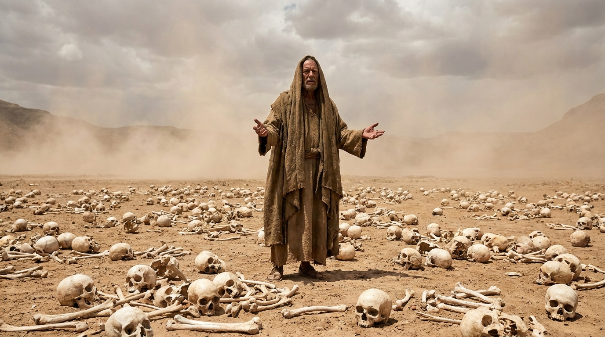

Visões da Glória, Julgamento e Vida Nova
O livro de Ezequiel é repleto de visões impactantes e simbolismos proféticos. Escrevendo diretamente do exílio na Babilônia, Ezequiel alerta os exilados de que Jerusalém cairá devido à contínua rebeldia, o que de fato acontece, e ele vê a glória de Deus deixando o Templo. No entanto, após a queda da cidade, a mensagem muda para uma poderosa esperança: Deus promete não apenas trazer o povo de volta, mas também dar a eles um "novo coração" e habitar novamente em seu meio em um Templo restaurado e glorioso.
Ficha Técnica
- Autor: O sacerdote e profeta Ezequiel.
- Tema Principal: A santidade e a glória de Deus, a responsabilidade pessoal pelo pecado e a futura restauração espiritual e nacional de Israel.
- Versículo-Chave: "Darei a vocês um coração novo e porei um espírito novo em vocês; tirarei de vocês o coração de pedra e, em troca, darei um coração de carne." (Ezequiel 36:26)
Estrutura
- O chamado de Ezequiel e a visão da carruagem da Glória de Deus (Caps. 1-3)
- Avisos e julgamento sobre Jerusalém (e a Glória deixando o Templo) (Caps. 4-24)
- Oráculos de julgamento contra as nações vizinhas (Caps. 25-32)
- Promessas de restauração: O vale de ossos secos e o coração de carne (Caps. 33-39)
- A visão do novo Templo e o retorno da Glória de Deus (Caps. 40-48)